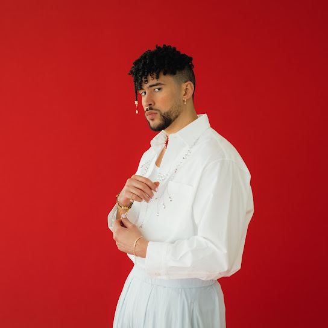

¿Quién es Bad Bunny?
Bad Bunny, cuyo nombre real es Benito Antonio Martínez Ocasio, es un cantante, compositor y rapero puertorriqueño. Es conocido por su estilo innovador y su impacto en el género del reguetón y trap latino. Desde el inicio de su carrera en 2015, ha alcanzado fama mundial gracias a éxitos como "Soy Peor", "Callaíta", y "Tití Me Preguntó".
Algunos datos interesantes
- Nació el 10 de marzo de 1994 en Vega Baja, Puerto Rico.
- Es reconocido por romper barreras de género en la moda y la música.
- Ha colaborado con artistas de renombre como J Balvin, Drake y Rosalía.
- Su álbum "Un Verano Sin Ti" fue uno de los más escuchados globalmente en 2022.
Galería
Aquí una imagen representativa de Bad Bunny:
